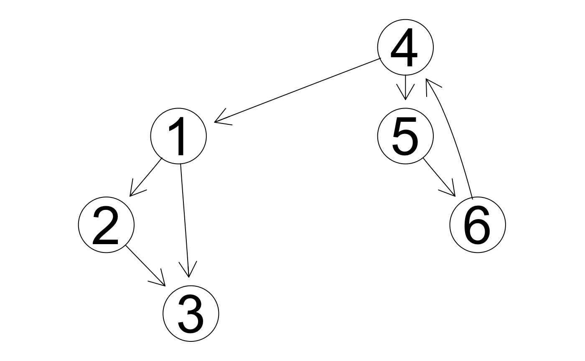

library(qpdt)
From a graph theoretic point of view, a pedigree can be represented as a directed acyclic graph. The name already tells it, that the graph must not show any cycles.
In general a graph \(G = (V, E)\) is defined by the two sets \(V\) and \(E\) where \(V\) contains the set of vertices or nodes and \(E\) contains the set of edges where each edge is formed by two verties. Two main categories of graphs exist.
When graphs are shown as diagrams, edges of directed graphs are symbolised by arrows and edges of undirected graphs are just shown as ordinary lines.
In a directed graph, the number of edges which “point to” a given vertex, corresponds to the in-degree of the respective vertex. A certain edge \(E_j\) “points to” a vertex \(V_i\), if vertex \(V_i\) is the second element of edge \(E_j\), hence \(E_j = (*, V_i)\). Analogously, the number of edges which “point away” from a given vertex, defines the out-degree of the vertex. If edge \(E_j\) points away from vertex \(V_i\), then \(E_j = (V_i, *)\).
Vertex \(V_i\) is called a root vertex (or root node), if the in-degree of \(V_i\) is equal to \(0\). Vertex \(V_i\) is referred to as terminal vertex if the out-degree of \(V_i\) is equal to \(0\).
Pedigrees can be represented by directed graphs. The nodes stand for the individuals in the pedigree and the edges show the relationship between parents and offspring. The direction is often chosen to go from parents to offspring. Further properties of a pedigree-graph are that
A cycle in a directed graph is found when in a path of vertices along the directed edges, any vertice is visited more than once.
library(Rgraphviz) dg_cyc <- new("graphNEL", nodes=as.character(1:6), edgemode="directed") dg_cyc <- addEdge("1", "2", dg_cyc, 1) dg_cyc <- addEdge("1", "3", dg_cyc, 1) dg_cyc <- addEdge("2", "3", dg_cyc, 1) dg_cyc <- addEdge("4", "1", dg_cyc, 1) dg_cyc <- addEdge("4", "5", dg_cyc, 1) dg_cyc <- addEdge("5", "6", dg_cyc, 1) dg_cyc <- addEdge("6", "4", dg_cyc, 1) plot(dg_cyc)

Starting at node \(4\) and following the path along the directed edges leads to the following path
\[4 \rightarrow 5 \rightarrow 6 \rightarrow 4.\]
The above path visits the vertex \(4\) twice and hence the above directed graph contains a cycle.
Directed graphs that do not contain any cycles are called directed acyclic graphs (DAG). This special class of directed acyclic graphs is of special interest because the representation of a pedigree in terms of graphs corresponds to a DAG. As a consequence of that any graph that represents a pedigree cannot contain any cycles and this property can be used as a consistency check for a pedigree.
As explained in the previous section, any pedigree can be represented by a DAG. Hence, we can construct a directed graph based on a given pedigree and then we can check whether this graph contains any cycles. In order to perform this check, we need an algorithm that takes a directed graph as input and that outputs the result ‘TRUE’, if the directed graph that was used as input contains any cycles and ‘FALSE’ otherwise. Only pedigrees whose directed graph representations cause the algorithm to return the result ‘FALSE’ are valid pedigrees.
The idea of an algorithm to find cycles in a directed graph is based on the concept of ‘depth-first’ traversal (DFT) of the graph. In a depth first traversal of a graph, the vertices are visited recursively along the parent-offspring relationship until a dead-end is hit with a vertex that does not have anymore offspring. Once a dead-end is hit, the traversal does a back-track to the parent with more offpsring that have not yet been visited.
A ‘depth-first’ traversal of the above shown example graph starting at vertex \(1\) would lead to the following path
\[1 \rightarrow 2 \rightarrow 3 \rightarrow 3\]
The first implementation is done using three different sets of vertices.
The implementation consists of the following steps
In this subsection, we try to give some R-code to solve the problem of finding cycles in directed graphs for the above example. Before starting with the steps of the implementation, we have to define the graph. In this case, we use an adjacency matrix \(A\).
# number of vertices in the graph nr_vert <- 6 # adjacency matrix mat_A <- matrix(0, nrow = nr_vert, ncol = nr_vert) mat_A[1, 2] <- 1 mat_A[1, 3] <- 1 mat_A[2, 3] <- 1 mat_A[4, 1] <- 1 mat_A[4, 5] <- 1 mat_A[5, 6] <- 1 mat_A[6, 4] <- 1 mat_A #> [,1] [,2] [,3] [,4] [,5] [,6] #> [1,] 0 1 1 0 0 0 #> [2,] 0 0 1 0 0 0 #> [3,] 0 0 0 0 0 0 #> [4,] 1 0 0 0 1 0 #> [5,] 0 0 0 0 0 1 #> [6,] 0 0 0 1 0 0
We start with step 1, the initialisation of the three sets
# initialisation (l_set <- list(white = 1:6, grey = NULL, black = NULL)) #> $white #> [1] 1 2 3 4 5 6 #> #> $grey #> NULL #> #> $black #> NULL
In step 2, a random vertex, e.g. vertex \(1\) is selected and moved from the white set to the grey set. Because the move of vertices from the white set to the grey set is a task that has to be done repeatedly, we are creating a function for that.
move_white_grey <- function(pn_cur_vertex, pl_set){ # if pn_cur_vertex is already in the grey set, then we found a cycle if (is.element(pn_cur_vertex, pl_set$grey)) stop(" * Found a cycle in the graph with vertex: ", pn_cur_vertex) # init result set l_result_set <- pl_set # check whether current vertex is in the white set if (!is.element(pn_cur_vertex, l_result_set$white)) stop(" *** ERROR: CANNOT FIND vertex: ", pn_cur_vertex, " in white set: ", paste0(l_result_set$white, collapse = ',')) # remove pn_cur_vertex from white set l_result_set$white <- setdiff(l_result_set$white, pn_cur_vertex) # add pn_cur_vertex to grey set l_result_set$grey <- union(l_result_set$grey, pn_cur_vertex) return(l_result_set) }
The move can be done with
cur_vertex <- 1 (l_set <- move_white_grey(pn_cur_vertex = cur_vertex, pl_set = l_set)) #> $white #> [1] 2 3 4 5 6 #> #> $grey #> [1] 1 #> #> $black #> NULL
Now we have to explore all neighbors of vertex \(1\). The neighbors are found in the first row of the adjacency matrix \(A\)
which(mat_A[cur_vertex,] == 1) #> [1] 2 3
The neighbors are found in the columns where the matrix \(A\) has an entry of \(1\). The neighbors of a given vertex can be obtained with the following function
get_neighbors <- function(pn_cur_vertex, pmat_adj){ # check whether the index of the current vertex is in adj matrix if (pn_cur_vertex > nrow(pmat_adj)) stop(" *** ERROR: CANNOT FIND current vertex: ", pn_cur_vertex) # get neighbors return(which(pmat_adj[pn_cur_vertex, ] == 1)) }
The above function to return neighbors of all vertices can be tested with
lapply(1:nr_vert, get_neighbors, mat_A) #> [[1]] #> [1] 2 3 #> #> [[2]] #> [1] 3 #> #> [[3]] #> integer(0) #> #> [[4]] #> [1] 1 5 #> #> [[5]] #> [1] 6 #> #> [[6]] #> [1] 4
Now we assign the first neighbor of \(1\) as the current vertex which is
(vec_neighbors_v1 <- get_neighbors(pn_cur_vertex = cur_vertex, pmat_adj = mat_A)) #> [1] 2 3
Hence the new current vertex is
(cur_vertex <- vec_neighbors_v1[1]) #> [1] 2
We have to check whether the current vertex \(2\) is in the black set or in the grey set
(b_check <- is.element(cur_vertex, l_set$black) || is.element(cur_vertex, l_set$grey)) #> [1] FALSE
which is FALSE. Hence we can add the current vertex to the grey set.
(l_set <- move_white_grey(pn_cur_vertex = cur_vertex, pl_set = l_set)) #> $white #> [1] 3 4 5 6 #> #> $grey #> [1] 1 2 #> #> $black #> NULL
Since we are doing a DFT, we have to first check for neighbors of the current vertex \(2\). The neighbors are obtained by
(vec_neighbors_v2 <- get_neighbors(pn_cur_vertex = cur_vertex, pmat_adj = mat_A)) #> [1] 3
The current vertex is assigned to
(cur_vertex <- vec_neighbors_v2[1]) #> [1] 3
Because the current vertex \(3\) is neither in the grey set nor in the black set, it is added to the grey set,
(l_set <- move_white_grey(pn_cur_vertex = cur_vertex, pl_set = l_set)) #> $white #> [1] 4 5 6 #> #> $grey #> [1] 1 2 3 #> #> $black #> NULL
Because the current vertex \(3\) does not have any neighbors, all vertices in the grey set are moved to the black set.
move_grey_black <- function(pn_current_vertex, pl_set){ # check whether pn_current_vertex is already in the black set if (is.element(pn_current_vertex, pl_set$black)) stop(" *** ERROR: FOUND vertex: ", pn_current_vertex, " in black set: ", paste0(pl_set$black, collapse = ', ')) l_result_set <- pl_set l_result_set$grey <- setdiff(l_result_set$grey, pn_current_vertex) l_result_set$black <- union( l_result_set$black, pn_current_vertex) return(l_result_set) }
Applying the function for all elements in the grey set leads to
vec_visited_vertex <- l_set$grey for (v in vec_visited_vertex){ l_set <- move_grey_black(pn_current_vertex = v, pl_set = l_set) } l_set #> $white #> [1] 4 5 6 #> #> $grey #> numeric(0) #> #> $black #> [1] 1 2 3
At this point, the DFT is returning to the second neighbor of vertex \(1\) which corresponds to 3. Since this neighbor is already in the black set, we do not have to check 3 again.
The next step is to go back to the remaining elements in the white set. The remaining steps are done using the following set of functions.
The following functions can be used to automate the checks and the DFT.
has_cycle <- function(pmat_adj){ nr_vertex <- nrow(pmat_adj) # check whether pmat_adj is quadratic if (ncol(pmat_adj) != nr_vertex) stop(" *** ERROR: pmat_adj is not a valid adjacency matrix") # define the sets l_set_wgb <- list(white = 1:nr_vertex, grey = NULL, black = NULL) # loop over vertices in the white set vec_non_visited <- l_set_wgb$white for (v in vec_non_visited){ if (dfs(pn_current_vertex = v, pl_set = l_set_wgb, pmat_adj = pmat_adj)) return(TRUE) } return(FALSE) }
The recursive DFT is done in the function dfs()
dfs <- function(pn_current_vertex, pl_set, pmat_adj){ # move the current vertex to the grey set l_set <- move_white_grey(pn_cur_vertex = pn_current_vertex, pl_set = pl_set) # determine neighbors of the current vertex vec_neighbors <- get_neighbors(pn_cur_vertex = pn_current_vertex, pmat_adj = pmat_adj) # loop over neighbors for (idx in seq_along(vec_neighbors)){ cur_neighbor <- vec_neighbors[idx] # if the current neighbor is in the black set, continue if (is.element(cur_neighbor, l_set$black)) next # if the neighbor is in the grey set, cylce is found if (is.element(cur_neighbor, l_set$grey)) return(TRUE) # continue DFT with neighbor if (dfs(pn_current_vertex = cur_neighbor, pl_set = l_set, pmat_adj = pmat_adj)) return(TRUE) } # move the current vertex from grey to black l_set <- move_grey_black(pn_current_vertex = pn_current_vertex, pl_set = l_set) return(FALSE) }
The above function can be tested with the following call
has_cycle(pmat_adj = mat_A) #> [1] TRUE
This result shows that the directed graph represented by the adjacency matrix mat_A contains a cycle. If the edge between vertices \(6\) and \(4\) is removed, then we get a directed acyclic graph.
mat_A_dag <- mat_A mat_A_dag[6,4] <- 0 mat_A_dag #> [,1] [,2] [,3] [,4] [,5] [,6] #> [1,] 0 1 1 0 0 0 #> [2,] 0 0 1 0 0 0 #> [3,] 0 0 0 0 0 0 #> [4,] 1 0 0 0 1 0 #> [5,] 0 0 0 0 0 1 #> [6,] 0 0 0 0 0 0
Running the check for the DAG given by mat_A_dag results in
has_cycle(pmat_adj = mat_A_dag) #> [1] FALSE
As shown above, the algorithm was able to find cycles in the two example graphs. There are a number of improvements that can be made to the solution proposed so far.
In a first approach we can modify the function dfs() to output the vertices in the cycle.
dfs <- function(pn_current_vertex, pl_set, pmat_adj){ # move the current vertex to the grey set l_set <- move_white_grey(pn_cur_vertex = pn_current_vertex, pl_set = pl_set) # determine neighbors of the current vertex vec_neighbors <- get_neighbors(pn_cur_vertex = pn_current_vertex, pmat_adj = pmat_adj) # loop over neighbors for (idx in seq_along(vec_neighbors)){ cur_neighbor <- vec_neighbors[idx] # if the current neighbor is in the black set, continue if (is.element(cur_neighbor, l_set$black)) next # if the neighbor is in the grey set, cylce is found if (is.element(cur_neighbor, l_set$grey)){ cat(" * Cycle - current node: ", cur_neighbor, " - grey set: ", paste0(l_set$grey, collapse = ', '), "\n") return(TRUE) } # continue DFT with neighbor if (dfs(pn_current_vertex = cur_neighbor, pl_set = l_set, pmat_adj = pmat_adj)) return(TRUE) } # move the current vertex from grey to black l_set <- move_grey_black(pn_current_vertex = pn_current_vertex, pl_set = l_set) return(FALSE) }
Calling the check function for the graph containing the cycle results in
has_cycle(pmat_adj = mat_A) #> * Cycle - current node: 4 - grey set: 4, 5, 6 #> [1] TRUE
This shows the vertices that are in the cycle. The above shown improvement does not give the path of the cycle.
The node list shows for each vertex the parent vertices. This is an important representation of a graph, because that is how pedigrees are usually specified. A node list that represents a pedigree has three columns. The first column is used for the ID of the vertex, the second column is used for the first parent vertex (father) and the second column contains the second parent vertex (mother). This change has an impact on the way how neighbors are determined.
Our example graph from above can be specified as a pedigree-node-list given by the following table.
tbl_node_list <- tibble::tibble(ID = c(1:6), Father = c(4,1,1,6,4,5), Mother = c(NA,NA,2,NA,NA,NA)) knitr::kable(tbl_node_list)
| ID | Father | Mother |
|---|---|---|
| 1 | 4 | NA |
| 2 | 1 | NA |
| 3 | 1 | 2 |
| 4 | 6 | NA |
| 5 | 4 | NA |
| 6 | 5 | NA |
The function to find the neighbors based on the node list is given below.
get_neighbors_node_list <- function(pn_current_vertex, ptbl_node_list) { # neighbor vertices can be found in the ID-column of ptbl_node_list where # pn_current_vertex is either in the Father column or the Mother column if (is.element(pn_current_vertex, ptbl_node_list$Father)) { tbl_result_neighbor <- dplyr::filter(ptbl_node_list, Father == pn_current_vertex) vec_result_neighbor <- tbl_result_neighbor$ID } else if (is.element(pn_current_vertex, ptbl_node_list$Mother)) { tbl_result_neighbor <- dplyr::filter(ptbl_node_list, Mother == pn_current_vertex) vec_result_neighbor <- tbl_result_neighbor$ID } else { vec_result_neighbor <- NULL } return(vec_result_neighbor) }
The function is tested with
lapply(1:nr_vert, get_neighbors_node_list, tbl_node_list) #> [[1]] #> [1] 2 3 #> #> [[2]] #> [1] 3 #> #> [[3]] #> NULL #> #> [[4]] #> [1] 1 5 #> #> [[5]] #> [1] 6 #> #> [[6]] #> [1] 4
Because root-vertices and terminal vertices cannot be elements of a cycle. Any vertex that is an element in a cycle must have at least one edge that points to the vertex and one edge that points away from the vertex, otherwise the cycle would be broken at this vertex. Hence root-vertices and terminal vertices need not be included in the white set. This reduces the number of vertices that must be checked in the DFT-algorithm.
The check for cycles can be implemented using the R6 class-system. The R6 class which does the check is called PedigreeCycleCheck. This class contains the method has_cycle() which does the check as shown in the function has_cycle() above. The advantage of this solution is that information about the pedigree which might be large needs to be stored only once and does not have to be passed as function argument.
The check for the pedigree with a cycle is done as shown below.
pcfc <- PedigreeCycleCheck$new() pcfc$set_tbl_pedigree(ptbl_pedigree = tbl_node_list) pcfc$set_n_ani_col(pn_ani_col = 1) pcfc$set_n_sire_col(pn_sire_col = 2) pcfc$set_n_dam_col(pn_dam_col = 3) pcfc$has_cycle() #> [1] TRUE
The result of the method has_cycle() returns either true or false. If we want to know the vertices that occur in a cycle, they can be obtained via the following statements
pcfc$set_b_report_cycle(TRUE) pcfc$has_cycle() #> [1] TRUE pcfc$get_tbl_cycle() #> # A tibble: 3 x 2 #> parent offspring #> <int> <int> #> 1 4 5 #> 2 5 6 #> 3 6 4
Doing the same check with a pedigree without loop is done as follows.
tbl_ped_no_cycle <- tibble::tibble(ID = c(1:6), Father = c(4,1,1,NA,4,5), Mother = c(NA,NA,2,NA,NA,NA)) pcnc <- PedigreeCycleCheck$new() pcnc$set_tbl_pedigree(ptbl_pedigree = tbl_ped_no_cycle) pcnc$set_n_ani_col(pn_ani_col = 1) pcnc$set_n_sire_col(pn_sire_col = 2) pcnc$set_n_dam_col(pn_dam_col = 3) pcnc$has_cycle() #> [1] FALSE
Working with the R6 objects is not easy. To simplify, a wrapper function is available. This is used as shown below.
check_cycle_pedigree(ptbl_pedigree = tbl_node_list, pb_report_cycle = TRUE) #> $PedFile #> NULL #> #> $HasCycle #> [1] TRUE #> #> $TblCycle #> # A tibble: 3 x 2 #> parent offspring #> <int> <int> #> 1 4 5 #> 2 5 6 #> 3 6 4
The wrapper function can also be used with a pedigree that is read from an input file.
check_cycle_pedigree(ps_pedig_path = system.file('extdata','data_sample2.csv', package = 'qpdt')) #> $PedFile #> [1] "/private/var/folders/2v/jfsqj8zj2f122jcgy15nzfn00000gn/T/Rtmp4wSii3/temp_libpath909f297b1eee/qpdt/extdata/data_sample2.csv" #> #> $HasCycle #> [1] FALSE